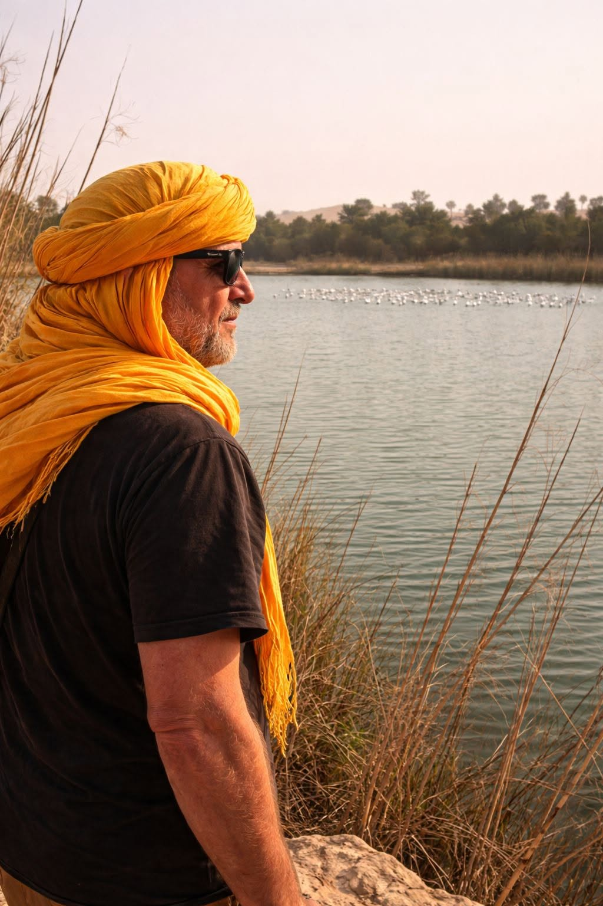

Les yeux du désert
Dans le silence vaste
d’El Menia,
Là où le désert respire
à voix basse,
Les lacs s’étendent
comme des miroirs anciens,
Gardant des secrets
que le vent n’efface.
Ils dorment
sous l’azur brûlant,
immobiles,
Reflets d’un ciel
sans ride
ni détour.
Et leurs eaux,
fragiles
comme une prière,
Capturent l’éternité
en plein jour.
Autour,
les dunes murmurent
leur lente histoire,
Grains d’or
glissant entre les doigts
du temps,
Tandis que les palmiers,
en veilleurs discrets,
Bercent l’ombre
d’un geste patient.
Ô lacs d’El Goléa,
oasis de songes,
Vous êtes des pauses
dans l’infini,
Des souffles d’eau
posés sur la braise du monde,
Des éclats de fraîcheur
dans l’oubli.
Et quand vient le soir,
que le ciel se déchire
En pourpre,
en cuivre,
en mélancolie,
Vos rives deviennent
des seuils invisibles
Où le jour s’incline…
et s’enfuit.
Je vous imagine
comme des yeux du désert,
Ouverts sur l’insondable
et le lointain,
Regardant passer les hommes
et les saisons
Sans jamais trembler
sous leur destin.
El Menia le 10 Avril 2026
Djamel Metref

← Tous les poèmes
Les yeux du désert
Carnets de voyages · Nature et écologie